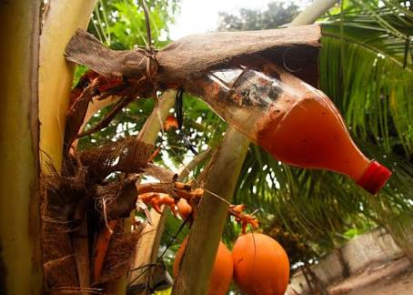

A native wine that's the favourite of Filipinos, tuba has become a symbol of pride for local drinkers and enthusiastic foodies. In the Philippines, we have a unique drink called tuba. It’s very popular, especially in the Visayan islands, where it’s a common part of gatherings. You’ll find it flowing at town fiestas, parties, baptisms, and celebrations.
Called coconut wine in English, tuba is made from coconut sap. Tuba makers climb coconut trees—usually with just simple tools like a knife (called a sanggot) and their natural skill. They then make a cut in the flower stem of the tree to gather the sap. The climber then ties a container to the tree to collect the sap, which is sometimes left overnight to gather. The next day, the sap is collected and sometimes drunk right away. Though this liquid will hold very little alcohol content, it is incredibly sweet and still a wonderful delicacy to try.
To make tuba, the sap needs to be fermented first. This often takes a few weeks before it’s ready to be called tuba. In provinces like Leyte and Samar, where tuba is especially popular, makers add barok (a reddish tree bark) to give the drink a natural reddish-orange color
Production of Tuba
Coconut wine is common in several countries. In the Philippines it is called Tuba, in India it is known as Toddy, in Indonesia is Tuak, in Angola is Manjenvo. Tuba is nothing more than the fermentation of the sap taken from coconut tree or other types of palm trees. In the Philippines, the Tuba which is consumed is mainly from the sap of coconut palm and that’s why they call it coconut wine.
The person who harvests the sap is known as Tapper. He climbs the coconut tree, makes a cut in the inflorescence and ties a gallon to collect the sap. The production of Tuba requires a routine of climbing the coconut tree twice a day. At the end of the day, the collector goes up to make a pruning in the inflorescence so the sap drips in the gallon during the night. At sunrise, he climbs the coconut tree again and removes the collected sap from the gallon. This sap is then ready for sale.
If you drink the coconut tree sap at the moment it is collected, you feel a super sweet drink with very little alcohol content. However, the fermentation is fast and in 3-4 days it can already become vinegar. If the temperature is controlled, it is possible to have a longer fermentation. It is also common to distil the sap and turn into a kind of vodka. In the Philippines, it is called Lambanog.
The natural colour of the sap is milky white, but in some islands of the Philippines, there is a popular preference for the orange colour. This colour comes from chunks of a tree trunk that are added in the process. They say that it is a natural additive which helps to slow down the fermentation process.